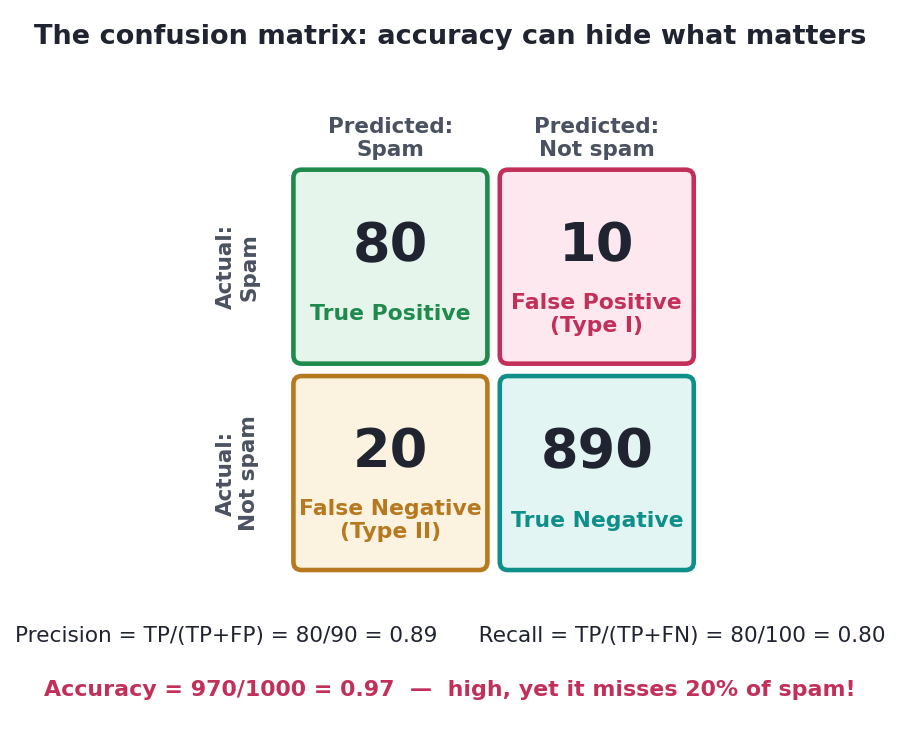

Capstone C — Predictive Model, Honestly Evaluated
A churn model with leakage checks, honest metrics, and interpretation.
TelBox wants to predict which customers will churn so retention can intervene. Anyone can call .fit(); this capstone is about doing it honestly — guarding against leakage, refusing to be fooled by accuracy on imbalanced data, tuning the threshold to the business, and interpreting what the model relies on. It chains Tracks 8, 9, and 10 into one trustworthy workflow. (Outputs below are from a real run of this pipeline.)
Before any modellingStep 1 — Frame it, and guard against leakage
Target: will this customer churn in the next 30 days? Features: only things known at the prediction moment — tenure, plan, usage trends, support tickets to date. The first professional instinct is a leakage audit: any field populated because of churn (a cancellation date, a final invoice, an exit survey) is a proxy for the label and must be dropped (Track 9). Then wrap every learned transform in a Pipeline so preprocessing is fit on train folds only — no train–test contamination.
Why 86% is a warning, not a winStep 2 — Build it — and meet the accuracy trap
We fit a leakage-safe pipeline (scale → logistic regression with balanced class weights) and score a held-out test set. Then we look at the metrics that matter on imbalanced data — because only ~15% of customers churn:
from sklearn.pipeline import Pipeline
from sklearn.preprocessing import StandardScaler
from sklearn.linear_model import LogisticRegression
from sklearn.metrics import accuracy_score, precision_score, recall_score, roc_auc_score, average_precision_score
pipe = Pipeline([("scale", StandardScaler()),
("clf", LogisticRegression(max_iter=1000, class_weight="balanced"))])
pipe.fit(X_train, y_train) # preprocessing fit on TRAIN only
proba = pipe.predict_proba(X_test)[:, 1]
pred = (proba >= 0.5)
print('churn base rate:', round(y.mean(), 3))
print('do-nothing accuracy (predict "no churn"):', 0.847)
print('our model accuracy:', round(accuracy_score(y_test, pred), 3))
print('precision:', round(precision_score(y_test, pred), 3),
'recall:', round(recall_score(y_test, pred), 3))
print('ROC-AUC:', round(roc_auc_score(y_test, proba), 3),
'PR-AUC:', round(average_precision_score(y_test, proba), 3))churn base rate: 0.153 do-nothing accuracy (predict "no churn"): 0.847 our model accuracy: 0.863 precision: 0.534 recall: 0.81 ROC-AUC: 0.904 PR-AUC: 0.702
Look closely: our model's 86.3% accuracy barely beats the 84.7% you'd get by predicting "nobody churns" — on accuracy alone the model looks almost pointless. But it's actually good: it catches 81% of churners (recall) with a strong 0.90 ROC-AUC. Accuracy hid all of that behind the 85% majority class. This is the accuracy trap from Track 10, live — always judge imbalanced models on recall, precision, and PR/ROC-AUC.

0.5 is not sacredStep 3 — Tune the threshold to the business
Retention wants to catch more would-be churners, and a wasted retention offer (false positive) is cheap next to a lost customer (false negative). So we lower the threshold below 0.5 to buy recall — a free win with no retraining (Track 10):
for t in [0.50, 0.35, 0.25]:
pred = (proba >= t)
print(f'threshold {t}: precision {precision_score(y_test, pred):.2f} '
f'recall {recall_score(y_test, pred):.2f} flagged {pred.mean():.0%}')threshold 0.5: precision 0.53 recall 0.81 flagged 23% threshold 0.35: precision 0.42 recall 0.89 flagged 32% threshold 0.25: precision 0.35 recall 0.91 flagged 39%
Dropping the threshold to 0.35 lifts recall from 81% to 89% — we now catch nearly nine in ten churners — at the cost of flagging more customers (some who wouldn't have churned). If a retention offer costs $5 and a saved customer is worth $200, that trade is overwhelmingly worth it. The threshold is a business dial, set by the cost of each error, not left at 0.5.
Cross-validation, not one lucky splitStep 4 — Is the estimate honest?
from sklearn.model_selection import cross_val_score
cv = cross_val_score(pipe, X, y, cv=5, scoring='roc_auc')
print('5-fold ROC-AUC:', cv.round(3))
print('honest estimate:', round(cv.mean(), 3), '+/-', round(cv.std(), 3))5-fold ROC-AUC: [0.913 0.913 0.905 0.911 0.901] honest estimate: 0.909 +/- 0.005
Five folds agree tightly (0.909 ± 0.005), so the performance is stable, not a lucky split — and the test set was opened once, at the end, for the final numbers in Step 2. A last professional step (Track 10): check calibration if retention will act on the probability value itself, and run permutation importance / SHAP to confirm the model leans on sensible drivers (tenure, recent usage drop, support tickets) — not a leaked or nonsensical feature.
Interactive labYour turn — compute the bar the model must clear
The accuracy trap: a do-nothing model that predicts "no one churns" is right for every non-churner. Given the churn base rate, compute that majority-class baseline accuracy (1 − churn_rate), round to 3 decimals, and assign to answer. Our model's 0.863 must be judged against this, not against 0.
churn_rate preloaded. First Run boots Python.1 - churn_rate. Round to 3 dp.answer = round(1 - churn_rate, 3)0.847 — so our model's 0.863 accuracy is only ~1.6 points better than predicting nothing. That's why accuracy is the wrong headline here, and recall (0.81) plus AUC (0.90) tell the true story. Always compare a model to its majority-class baseline.
★ Key points to remember
- Audit for leakage first: drop any feature known only because the outcome occurred; wrap transforms in a Pipeline (fit on train folds only).
- On imbalanced data, accuracy is a trap — compare it to the majority-class baseline and judge on recall, precision, PR/ROC-AUC.
- Tune the threshold to error costs — lowering it buys recall for free (no retraining); 0.5 is not sacred.
- Use cross-validation for a stable estimate (report mean ± spread) and open the test set once.
- Finish with calibration (if acting on probabilities) and interpretation (permutation importance / SHAP) to confirm the model is trustworthy.
◆ Practice▸
Show solution & reasoning
A near-perfect AUC on a genuinely hard problem is a leakage alarm, not a triumph (Tracks 9–10). Checks: (1) Target leakage — audit the top features (permutation importance/SHAP); is any known only because the customer churned (cancellation date, final bill, downgrade flag) or does it encode the future? (2) Train–test contamination — were scaling/encoding/selection fit on the whole dataset instead of inside the pipeline/folds? (3) Temporal leakage — is the data time-ordered but split randomly, letting the model train on the future? (4) Duplicate/ID leakage — the same customer in train and test. I'd reproduce the score with a strict time-based split and a leakage-free Pipeline; if the AUC collapses to something plausible (~0.90), I've found the leak. The professional reflex: too good to be true usually is, and interpretation is how you catch it.
Show solution & reasoning
This is a ranking / top-k problem, not a fixed-threshold one. Instead of choosing a probability cutoff, you rank all customers by predicted churn probability and take the top 500 — so what matters is the model's ranking quality at the top (precision@500 / lift in the top decile), and ROC-AUC / PR-AUC as ranking summaries, rather than recall at 0.5. Calibrated absolute probabilities matter less than getting the order right at the top of the list. Practically: report precision@500 (of the 500 we flag, how many truly churn) and the capture rate (what share of all churners those 500 include), and revisit the number 500 against retention's capacity and the offer economics. The lesson: the business framing (a fixed budget of interventions) dictates the metric — here, top-k ranking, not a threshold.
You framed a target, audited for leakage, built a pipeline that can't contaminate the test set, saw through the accuracy trap to the metrics that matter, tuned the threshold to the business's costs, confirmed stability with cross-validation, and knew to check calibration and interpretation before trusting it. That disciplined, skeptical workflow — not the .fit() call — is what "building a model" means in a real job.